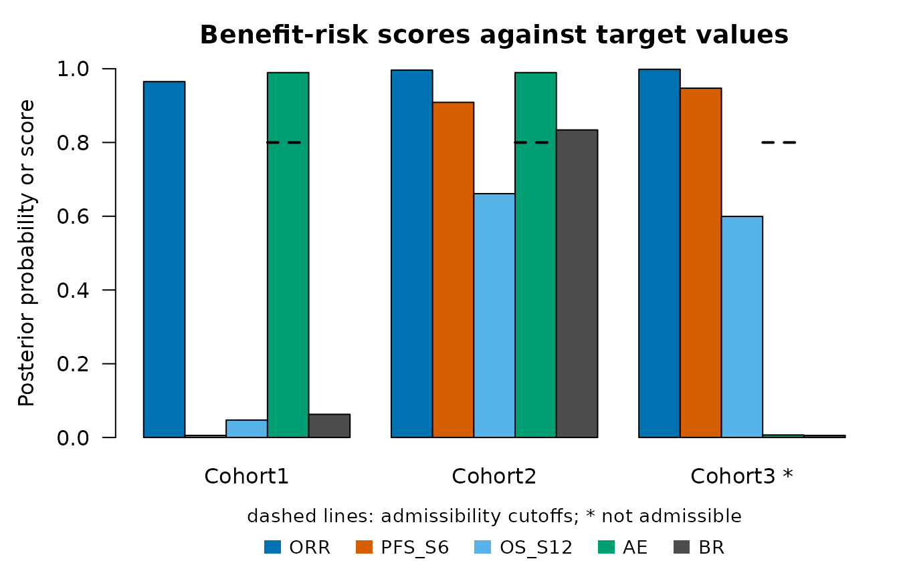
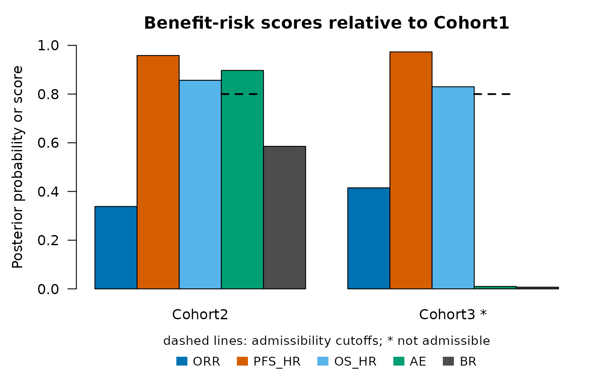

The posterior benefit-risk score of Chakraborty et al. (2026) summarizes several efficacy and safety endpoints of a cohort by posterior probabilities that each endpoint is favorable. This article describes the models, the components of the score and their combination, and the two ways of using the score: against target values and relative to a reference cohort.
Models
A binary endpoint, such as objective response or an adverse event, has a rate \(p\) with a beta prior \(\mathrm{Beta}(a_0, b_0)\). With \(x\) patients with the event among \(n\) evaluable patients, the posterior is \(\mathrm{Beta}(a_0 + x, b_0 + n - x)\). Patients with a missing value are not counted.
For a time-to-event endpoint, such as progression-free survival (PFS) or overall survival (OS), the event times are taken as exponential with hazard \(\lambda\), which has a gamma prior with shape \(a_0\) and rate \(b_0\). With \(d\) events and a total follow-up time \(T\), the posterior is \(\mathrm{Gamma}(a_0 + d, b_0 + T)\). The parameter of interest is the survival probability at a time \(t\), \(S(t) = \exp(-\lambda t)\), or the hazard ratio \(\lambda / \lambda_{\mathrm{ref}}\) of a cohort against a reference cohort. The exponential model makes the posterior available in closed form; it describes the survival probability at the chosen time and the overall hazard, not the shape of the survival curve.
The default priors are \(\mathrm{Beta}(0.5,
0.5)\) and \(\mathrm{Gamma}(0.5,
0)\), which carry little information. Other priors are set by the
columns prior.a and prior.b of the
criteria.
Components
Each component \(S_k\) is the
posterior probability that the parameter of an endpoint is favorable.
PosteriorProb() computes it from the posterior parameters.
With 18 responders among 40 patients, the probability that the response
rate is at least 0.3 is
PosteriorProb("rate", a = 0.5 + 18, b = 0.5 + 22, target = 0.3)
#> [1] 0.9780309
pbeta(0.3, 0.5 + 18, 0.5 + 22, lower.tail = FALSE)
#> [1] 0.9780309and with 20 events in 300 months of follow-up, the probability that the survival probability at month 6 is at least 0.5 is
PosteriorProb("surv", a = 0.5 + 20, b = 300, target = 0.5, time = 6)
#> [1] 0.996266Since \(S(6) \ge 0.5\) is equivalent to \(\lambda \le -\log(0.5) / 6\), this is a gamma probability. For an endpoint whose lower values are favorable, such as an adverse event, the component is the probability that the rate is at most the target.
Composite score and admissibility
The composite score of a cohort is
\[\mathrm{BR} = \prod_{k = 1}^{K} S_k^{w_k},\]
with weights \(w_k\) that are \(1 / K\) by default, which makes the score the geometric mean of the components. A small component lowers the score more than in an arithmetic mean, so a clearly unfavorable endpoint is compensated less by the others. The score of Chakraborty et al. (2026), the geometric mean of the efficacy components times the geometric mean of the safety components, is obtained with weights \(1 / K_{\mathrm{eff}}\) for the efficacy components and \(1 / K_{\mathrm{saf}}\) for the safety components.
A component can also have a cutoff: a cohort is admissible only when every such component reaches its cutoff. Without a reference cohort, the admissible cohort with the highest score is marked as selected.
Scores against target values
The data of one simulated trial with three cohorts of 50 patients illustrate the score. Cohort1 is the reference regimen. Cohort2 and Cohort3 are more active, and Cohort3 has many more adverse events (a true rate of 0.5 against 0.15).
make_arm <- function(pfs, orr, os) {
CorOncoEndpoints::OncoArm(pfs.median = pfs, orr = orr, resp.cor = 0.4,
death.prop = 0.15, os.median = os)
}
arms <- list(Cohort1 = make_arm(5, 0.30, 14), Cohort2 = make_arm(8, 0.50, 20),
Cohort3 = make_arm(9, 0.55, 21))
d <- SimCohorts(nsim = 1, n = c(50, 50, 50), arms = arms, ae.rate = c(0.15, 0.15, 0.50),
cutoff = 24, a.time = c(0, 12), seed = 11)
eps <- list(
Endpoint("OS", "tte", time = "os_tte", event = "os_event"),
Endpoint("PFS", "tte", time = "pfs_tte", event = "pfs_event"),
Endpoint("ORR", "binary", var = "response"),
Endpoint("AE", "binary", var = "ae", higher.better = FALSE))The criteria have one row per component. The efficacy components get weights of 1/3 and the safety component a weight of 1, and the adverse event rate must be at most 0.35 with a posterior probability of at least 0.8.
crit <- data.frame(endpoint = c("ORR", "PFS", "OS", "AE"),
target = c(0.30, 0.50, 0.60, 0.35),
time = c(NA, 6, 12, NA),
weight = c(1 / 3, 1 / 3, 1 / 3, 1),
cutoff = c(NA, NA, NA, 0.8))
br <- BenefitRisk(d, eps, crit)
br
#> Posterior benefit-risk scores against target values
#>
#> component definition weight cutoff
#> ORR P(rate >= 0.3) 0.333
#> PFS_S6 P(S(6) >= 0.5) 0.333
#> OS_S12 P(S(12) >= 0.6) 0.333
#> AE P(rate <= 0.35) 1 0.8
#>
#> group ORR PFS_S6 OS_S12 AE admissible BR selected
#> Cohort1 0.965 0.00564 0.0472 0.98949 TRUE 0.06286 FALSE
#> Cohort2 0.996 0.90879 0.6613 0.98949 TRUE 0.83399 TRUE
#> Cohort3 0.998 0.94723 0.5995 0.00682 FALSE 0.00564 FALSE
#>
#> Selected: Cohort2The column ORR is \(P(p \ge
0.3)\), PFS_S6 is \(P(S(6)
\ge 0.5)\) for PFS, OS_S12 is \(P(S(12) \ge 0.6)\) for OS and
AE is \(P(p \le 0.35)\)
for the adverse event. Cohort3 has an AE component of 0.01
and is not admissible. The selected cohort is Cohort2.
The printed result lists the definition, weight and cutoff of each
component before the scores. plot() shows the components
and the score of each cohort; the dashed lines are the admissibility
cutoffs, and an asterisk marks a cohort that is not admissible.
plot(br)
A component against a fixed target measures how certainly a cohort exceeds the target, not by how much. When several cohorts clearly exceed all targets, their components are all close to 1 and the scores separate them little. The targets should therefore be values that discriminate between the cohorts, such as the values expected for the reference regimen.
Scores relative to a reference cohort
With a reference cohort, each component compares a cohort with the reference: the probability that the difference of the rates or of the survival probabilities at a time is at least a margin (at most a margin for an endpoint whose lower values are favorable), or that the hazard ratio is at most a bound. The posterior distributions of the two cohorts are independent. The probability of a difference is computed by numerical integration, and that of the hazard ratio from the F distribution, since \((\lambda b / a) / (\lambda_{\mathrm{ref}} b_{\mathrm{ref}} / a_{\mathrm{ref}})\) follows an F distribution with \(2a\) and \(2a_{\mathrm{ref}}\) degrees of freedom for gamma posteriors with shapes \(a, a_{\mathrm{ref}}\) and rates \(b, b_{\mathrm{ref}}\).
crit_ref <- data.frame(endpoint = c("ORR", "PFS", "OS", "AE"),
measure = c("rate", "hr", "hr", "rate"),
target = c(0.10, 0.80, 0.90, 0.10),
weight = c(1 / 3, 1 / 3, 1 / 3, 1),
cutoff = c(NA, NA, NA, 0.8))
br_ref <- BenefitRisk(d, eps, crit_ref, reference = "Cohort1")
br_ref
#> Posterior benefit-risk scores relative to Cohort1
#>
#> component definition weight cutoff
#> ORR P(rate - rate_ref >= 0.1) 0.333
#> PFS_HR P(HR <= 0.8) 0.333
#> OS_HR P(HR <= 0.9) 0.333
#> AE P(rate - rate_ref <= 0.1) 1 0.8
#>
#> group reference ORR PFS_HR OS_HR AE admissible BR
#> Cohort2 Cohort1 0.338 0.958 0.857 0.89716 TRUE 0.58543
#> Cohort3 Cohort1 0.415 0.973 0.830 0.00999 FALSE 0.00694
plot(br_ref)
Here ORR is \(P(p -
p_{\mathrm{ref}} \ge 0.1)\), PFS_HR and
OS_HR are the probabilities that the hazard ratios against
Cohort1 are at most 0.8 and 0.9, and AE is \(P(p - p_{\mathrm{ref}} \le 0.1)\). The
survival probability at a time can be compared instead of the hazard
ratio with measure = "surv" and the column
time.
Using the score for a decision
The score itself does not say how large it must be to select a cohort. The article Evaluating decision rules by simulation chooses the thresholds of rules based on the score, such as “select the cohort whose score relative to the reference exceeds a threshold”, so that a cohort that is not better than the reference is rarely selected, and compares the rules with rules based on win statistics.
Reference
Chakraborty, S., Dubey, A. K., Kumar, A. and Chan, I. (2026). A two-stage dose optimization framework for oncology drug development with multiple efficacy and safety endpoints via an integrated benefit-risk assessment. Statistics in Biopharmaceutical Research, published online. https://doi.org/10.1080/19466315.2026.2668381